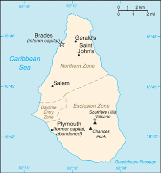
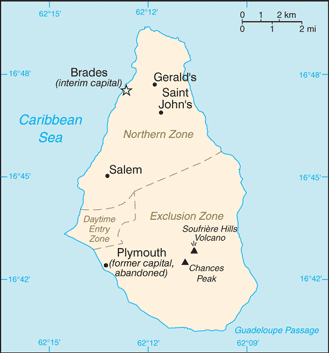

Central America and Caribbean :: MONTSERRAT
Introduction :: MONTSERRAT
-
English and Irish colonists from St. Kitts first settled on Montserrat in 1632; the first African slaves arrived three decades later. The British and French fought for possession of the island for most of the 18th century, but it finally was confirmed as a British possession in 1783. The island's sugar plantation economy was converted to small farm landholdings in the mid-19th century. Much of this island was devastated and two-thirds of the population fled abroad because of the eruption of the Soufriere Hills Volcano that began on 18 July 1995. Montserrat has endured volcanic activity since, with the last eruption occurring in July 2003.
Geography :: MONTSERRAT
-
Caribbean, island in the Caribbean Sea, southeast of Puerto Rico16 45 N, 62 12 WCentral America and the Caribbeantotal: 102 sq kmland: 102 sq kmwater: 0 sq kmcountry comparison to the world: 226about 0.6 times the size of Washington, DC0 km40 kmterritorial sea: 12 nmexclusive fishing zone: 200 nmtropical; little daily or seasonal temperature variationvolcanic island, mostly mountainous, with small coastal lowlandmean elevation: NAelevation extremes: lowest point: Caribbean Sea 0 mhighest point: Soufriere Hills volcano pre-eruption height was 915 m; current lava dome is subject to periodic build up and collapse; estimated dome height was 1050 m in 2015NEGLagricultural land: 30%arable land 20%; permanent crops 0%; permanent pasture 10%forest: 25%other: 45% (2011 est.)0 sq km (2012)only the northern half of the island is populated, the southern portion is uninhabitable due to volcanic activityvolcanic eruptions; severe hurricanes (June to November)volcanism: Soufriere Hills volcano (915 m), has erupted continuously since 1995; a massive eruption in 1997 destroyed most of the capital, Plymouth, and resulted in approximately half of the island becoming uninhabitable; the island of Montserrat is part of the volcanic island arc of the Lesser Antilles that extends from Saba in the north to Grenada in the southland erosion occurs on slopes that have been cleared for cultivationthe island is entirely volcanic in origin and comprised of three major volcanic centers of differing ages
People and Society :: MONTSERRAT
-
5,292note: an estimated 8,000 refugees left the island following the resumption of volcanic activity in July 1995; some have returned (July 2017 est.)country comparison to the world: 228noun: Montserratian(s)adjective: MontserratianAfrican/black 88.4%, mixed 3.7%, hispanic/Spanish 3%, caucasian/white 2.7%, East Indian/Indian 1.5%, other 0.7% (2011 est.)EnglishProtestant 67.1% (includes Anglican 21.8%, Methodist 17%, Pentecostal 14.1%, Seventh Day Adventist 10.5%, and Church of God 3.7%), Roman Catholic 11.6%, Rastafarian 1.4%, other 6.5%, none 2.6%, unspecified 10.8% (2001 est.)0-14 years: 16.5% (male 449/female 424)15-24 years: 21.52% (male 599/female 540)25-54 years: 47.43% (male 1,201/female 1,309)55-64 years: 8.45% (male 194/female 253)65 years and over: 6.1% (male 199/female 124) (2017 est.)total: 33.2 yearsmale: 32.6 yearsfemale: 33.7 years (2017 est.)country comparison to the world: 940.45% (2017 est.)country comparison to the world: 15210.8 births/1,000 population (2017 est.)country comparison to the world: 1836.2 deaths/1,000 population (2017 est.)country comparison to the world: 1540 migrant(s)/1,000 population (2017 est.)country comparison to the world: 89only the northern half of the island is populated, the southern portion is uninhabitable due to volcanic activityurban population: 9% of total population (2017)rate of urbanization: 0.7% annual rate of change (2015-20 est.)at birth: 1.03 male(s)/female0-14 years: 1.07 male(s)/female15-24 years: 1.08 male(s)/female25-54 years: 0.92 male(s)/female55-64 years: 0.83 male(s)/female65 years and over: 1.6 male(s)/femaletotal population: 1 male(s)/female (2016 est.)total: 12.3 deaths/1,000 live birthsmale: 9.7 deaths/1,000 live birthsfemale: 15.1 deaths/1,000 live births (2017 est.)country comparison to the world: 116total population: 74.6 yearsmale: 75.9 yearsfemale: 73.2 years (2017 est.)country comparison to the world: 1221.33 children born/woman (2017 est.)country comparison to the world: 216improved:urban: 99% of populationrural: 99% of populationtotal: 99% of populationunimproved:urban: 1% of populationrural: 1% of populationtotal: 1% of population (2015 est.)improved:urban: 82.9% of populationrural: 82.9% of populationtotal: 82.9% of populationunimproved:urban: 17.1% of populationrural: 17.1% of populationtotal: 17.1% of population (2007 est.)NANANA5.1% of GDP (2009)total: 15 yearsmale: 14 yearsfemale: 17 years (2007)
Government :: MONTSERRAT
-
conventional long form: noneconventional short form: Montserratetymology: island named by explorer Christopher COLUMBUS in 1493 after the Benedictine abbey Santa Maria de Montserrat, near Barcelona, Spainoverseas territory of the UKparliamentary democracy (Legislative Council); self-governing overseas territory of the UKname: Plymouth; note - Plymouth was abandoned in 1997 because of volcanic activity; interim government buildings have been built at Brades Estate, the de facto capital, in the Carr's Bay/Little Bay vicinity at the northwest end of Montserratgeographic coordinates: 16 42 N, 62 13 Wtime difference: UTC-4 (1 hour ahead of Washington, DC, during Standard Time)3 parishes; Saint Anthony, Saint Georges, Saint Peternone (overseas territory of the UK)birthday of Queen ELIZABETH II, second Saturday in June (1926)previous 1960; latest effective 1 September 2010; amended 2011 (2016)English common lawsee United Kingdom18 years of age; universalchief of state: Queen ELIZABETH II (since 6 February 1952); represented by Governor Elizabeth CARRIERE (since 5 August 2015)head of government: Premier Donaldson ROMERO (since 12 September 2014); note - effective with the new Constitution Order of October 2010, the office of premier replaced the office of chief ministercabinet: Executive Council consists of the governor, the premier, 3 other ministers, the attorney general, and the finance secretaryelections/appointments: the monarchy is hereditary; governor appointed by the monarch; following legislative elections, the leader of the majority party usually becomes premierdescription: unicameral Legislative Assembly (11 seats; 9 members directly elected in a single constituency by absolute majority vote in 2 rounds to serve 5-year terms and 2 ex-officio members - the attorney general and financial secretary)elections: last held on 11 September 2014 (next to be held by 2019)election results: percent of vote by party - PDM 50.0%, MCAP 35.4%, other 14.6%; seats by party - PDM 7, MCAP 2highest court(s): the Eastern Caribbean Supreme Court (ECSC) is the superior court of the Organization of Eastern Caribbean States; the ECSC - headquartered on St. Lucia - consists of the Court of Appeal - headed by the chief justice and 4 judges - and the High Court with 18 judges; the Court of Appeal is itinerant, travelling to member states on a schedule to hear appeals from the High Court and subordinate courts; High Court judges reside at the member states with 1 assigned to Montserrat; Montserrat is also a member of the Caribbean Court of Justicejudge selection and term of office: chief justice of Eastern Caribbean Supreme Court appointed by the Her Majesty, Queen ELIZABETH II; other justices and judges appointed by the Judicial and Legal Services Commission, and independent body of judicial officials; Court of Appeal justices appointed for life with mandatory retirement at age 65; High Court judges appointed for life with mandatory retirement at age 62subordinate courts: magistrate's courtMovement for Change and Prosperity or MCAP [Reuben MEADE]People's Democratic Movement or PDM [Shirley OSBORNE]NACaricom, CDB, Interpol (subbureau), OECS, UPUnone (overseas territory of the UK)none (overseas territory of the UK)blue with the flag of the UK in the upper hoist-side quadrant and the Montserratian coat of arms centered in the outer half of the flag; the arms feature a woman in green dress, Erin, the female personification of Ireland, standing beside a yellow harp and embracing a large dark cross with her right arm; Erin and the harp are symbols of Ireland reflecting the territory's Irish ancestry; blue represents awareness, trustworthiness, determination, and righteousnessnote: as a territory of the UK, "God Save the Queen" is official (see United Kingdom)
Economy :: MONTSERRAT
-
Severe volcanic activity, which began in July 1995, has put a damper on this small, open economy. A catastrophic eruption in June 1997 closed the airport and seaports, causing further economic and social dislocation. Two-thirds of the 12,000 inhabitants fled the island. Some began to return in 1998 but lack of housing limited the number. The agriculture sector continued to be affected by the lack of suitable land for farming and the destruction of crops.Prospects for the economy depend largely on developments in relation to the volcanic activity and on public sector construction activity. Half of the island remains uninhabitable. In January 2013, the EU announced the disbursement of a $55.2 million aid package to Montserrat in order to boost the country's economic recovery, with a specific focus on public finance management, public sector reform, and prudent economic management.$43.78 million (2006 est.)country comparison to the world: 225$NA3.5% (2008 est.)country comparison to the world: 80$8,500 (2006 est.)country comparison to the world: 146household consumption: 86.9%government consumption: 52.4%investment in fixed capital: 21.2%investment in inventories: -0.1%exports of goods and services: 24%imports of goods and services: -84.4% (2016 est.)agriculture: 1.6%industry: 21.8%services: 76.6% (2016 est.)cabbages, carrots, cucumbers, tomatoes, onions, peppers; livestock productstourism, rum, textiles, electronic appliances2% (2016 est.)country comparison to the world: 1124,521 (2012)country comparison to the world: 2236% (1998 est.)country comparison to the world: 80NA%lowest 10%: NA%highest 10%: NA%revenues: $37.04 millionexpenditures: $37.04 million (2016 est.)1 April - 31 March-0.2% (2016 est.)-1.1% (2015 est.)country comparison to the world: 4010.99% (31 December 2010)6.5% (31 December 2009)country comparison to the world: 207.26% (31 December 2016 est.)7.82% (31 December 2015 est.)country comparison to the world: 113$23.04 million (31 December 2016 est.)$17.64 million (31 December 2015 est.)country comparison to the world: 193$91.6 million (31 December 2016 est.)$90.69 million (31 December 2015 est.)country comparison to the world: 195$1.481 million (31 December 2016 est.)country comparison to the world: 190$5.2 million (2016 est.)$5.4 million (2015 est.)country comparison to the world: 218electronic components, plastic bags, apparel; hot peppers, limes, live plants; cattle$31.02 million (2016 est.)$31.29 million (2015 est.)country comparison to the world: 220machinery and transportation equipment, foodstuffs, manufactured goods, fuels, lubricants$49.36 million (31 December 2016 est.)$51.47 million (31 December 2015 est.)country comparison to the world: 171$8.9 million (1997)country comparison to the world: 201East Caribbean dollars (XCD) per US dollar -2.7 (2016 est.)2.7 (2015 est.)2.7 (2014 est.)2.7 (2013 est.)2.7 (2012 est.)
Energy :: MONTSERRAT
-
24 million kWh (2015 est.)country comparison to the world: 21322.32 million kWh (2015 est.)country comparison to the world: 2110 kWh (2016 est.)country comparison to the world: 1660 kWh (2016 est.)country comparison to the world: 1715,000 kW (2015 est.)country comparison to the world: 214100% of total installed capacity (2015 est.)country comparison to the world: 120% of total installed capacity (2015 est.)country comparison to the world: 1370% of total installed capacity (2015 est.)country comparison to the world: 1870% of total installed capacity (2015 est.)country comparison to the world: 1960 bbl/day (2016 est.)country comparison to the world: 1660 bbl/day (2014 est.)country comparison to the world: 1590 bbl/day (2014 est.)country comparison to the world: 1570 bbl (1 January 2017 es)country comparison to the world: 1640 bbl/day (2014 est.)country comparison to the world: 170570 bbl/day (2015 est.)country comparison to the world: 2090 bbl/day (2014 est.)country comparison to the world: 177416.4 bbl/day (2014 est.)country comparison to the world: 2070 cu m (2013 est.)country comparison to the world: 1650 cu m (2013 est.)country comparison to the world: 2050 cu m (2013 est.)country comparison to the world: 1450 cu m (2013 est.)country comparison to the world: 1520 cu m (1 January 2014 es)country comparison to the world: 16888,010 Mt (2012 est.)country comparison to the world: 209
Communications :: MONTSERRAT
-
total subscriptions: 3,000subscriptions per 100 inhabitants: 57 (July 2016 est.)country comparison to the world: 210total: 5,000subscriptions per 100 inhabitants: 95 (July 2016 est.)country comparison to the world: 215general assessment: modern and fully digitalizeddomestic: combined fixed-line and mobile-cellular teledensity exceeds 150 per 100 personsinternational: country code - 1-664; landing point for the East Caribbean Fiber System (ECFS) optic submarine cable with links to 13 other islands in the eastern Caribbean extending from the British Virgin Islands to Trinidad (2016)Radio Montserrat, a public radio broadcaster, transmits on 1 station and has a repeater transmission to a second station; repeater transmissions from the GEM Radio Network of Trinidad and Tobago provide another 2 radio stations; cable and satellite TV available (2007).mstotal: 2,860percent of population: 54.6% (July 2016 est.)country comparison to the world: 212
Transportation :: MONTSERRAT
-
number of registered air carriers: 1inventory of registered aircraft operated by air carriers: 3 (2015)VP-M (2016)1 (2013)country comparison to the world: 226total: 1under 914 m: 1 (2017)note: volcanic eruptions that began in 1995 destroyed most of the 227 km road system; a new road infrastructure has been built on the north end of the island (2017)major seaport(s): Little Bay, Plymouth
Military and Security :: MONTSERRAT
-
no regular military forces; Royal Montserrat Police Force (2011)defense is the responsibility of the UK
Transnational Issues :: MONTSERRAT
-
nonetransshipment point for South American narcotics destined for the US and Europe